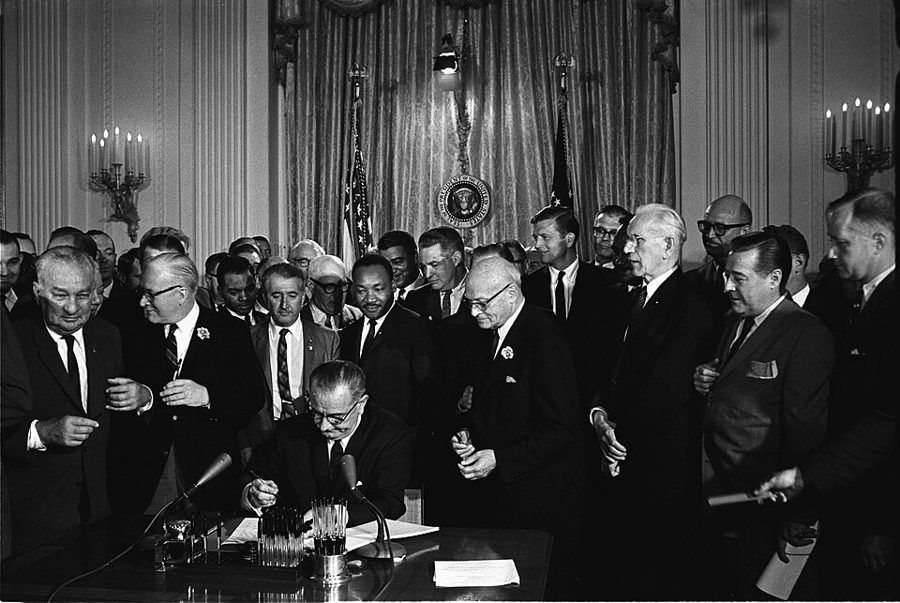
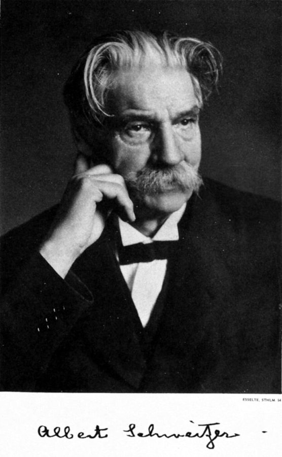
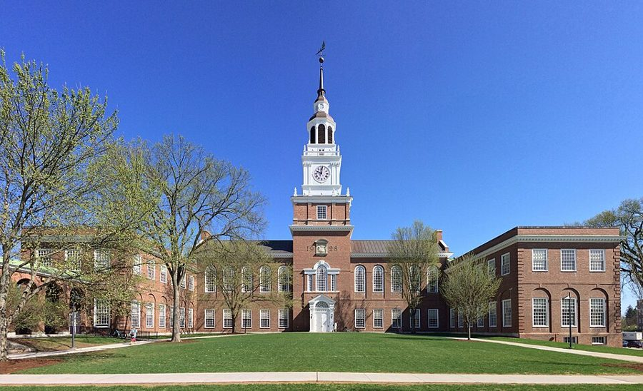

It was very good hearing from1964 年 1 月 4 日 · 写给 Mary留意：他说进步的最大障碍是什么；先让一步的那句客气话后面跟着什么。
Your card was a pleasant surprise1964 年 1 月 22 日 · 写给 Audrey留意：三年没联系，他只写了三小段。他怎么形容自己在 Howard 教书。
Since the lady who answered the1964 年 2 月 16 日 · 写给 Audrey留意：这封信为什么要写；他对 Dartmouth 是想去还是不想去。
It was very enjoyable talking with1964 年 2 月 22 日 · 写给 Audrey留意：他反悔的是哪件事；他盼法案原样通过，理由和别人一样吗。
I have been awfully busy lately1964 年 3 月 13 日 · 写给 Mary留意：两天的流水账里，学生、系主任、院长各做了什么；哪几处是往轻里说。
During the summer I wasn't able1964 年 3 月 14 日 · 写给 Hal留意：他说学生缺的是哪一样、不缺的是哪一样；账算在谁头上。
You seem to be weighing some1964 年 3 月 26 日 · 写给 Audrey留意：他没评她的诗，评的是什么；最后一句提前堵住了哪个借口。
I am a little chagrined to1964 年 7 月 13 日 · 写给 Bob留意：他说什么没变、什么变了；公司午餐那一段里谁跟着谁点菜。
I enjoyed your letter of February1965 年 4 月 20 日 · 写给 Miss Rosenthal留意：招聘的人对她说了什么；最后一句的「夸奖」是什么样的夸奖。
背景：作者默认你知道的事
1964 年的民权法案

1964 年 7 月 2 日，约翰逊总统在白宫签署《民权法案》。他给 Audrey 写那封信时，法案还卡在国会。Cecil Stoughton, White House Press Office，公有领域，维基共享资源
Odyssey 伴读讲过这部法案。信里叫它 the omnibus civil rights bill：一部把公共场所、就业、学校几方面都包进去的大法案。2 月众议院通过，参议院里南方议员拖了几个月，7 月 2 日签署。
他 2 月的信盼它一字不改地通过。理由和支持者不一样：他认为通过之后黑人的处境不会大变，那时大家才会回头想别的。
补考、缓交和 WP
美国大学的成绩单上除了 A 到 F，还有几种「没有成绩的成绩」。Incomplete 是功课没交完，先挂着以后补；WP（withdrew passing）是中途退课，退的时候成绩及格，不算不及格。make-up exam 是错过考试后的补考。
这些本来是给生病、家里出事的学生留的口子。给 Hal 的信说，在 Howard 它们被当成了人人都有的权利。
本站示意图，画的是 3 月给 Mary 的信里 12 日那天听来的一件事。信里在后三步后面各加了一个括号，意思是这在 Howard 是常事。这是他一方的说法。
「Albert Schweitzer 综合征」

Albert Schweitzer，诺贝尔奖的官方肖像。Nobel Foundation，公有领域，维基共享资源
Schweitzer 是阿尔萨斯出生的神学家、音乐家、医生，1913 年起在非洲加蓬的 Lambaréné 办医院，得了 1952 年的诺贝尔和平奖。在 60 年代的美国，他的名字就是「到非洲行善的白人」。
给 Hal 的信借这个名字说 Howard 的一类教师：多半是白人，心肠软，认为对这些孩子不能要求太高。他认为这种体谅害了学生。
Dartmouth 和 Hanover

Dartmouth College 的 Baker 图书馆，2018 年。Gunnar Klack，CC BY-SA 4.0，维基共享资源
American Telephone & Telegraph，美国电话电报公司，当时几乎独家经营全美的电话业务，串场说它是世界上最大的公司。总部在曼哈顿下城，他住在走路能到的 Greenwich Village。
给 Bob 的信里那顿午餐，写的是 50 年代人常说的大公司风气：穿一样的灰西装，跟着上司点菜。第一页讲过的 organization men 说的就是这种人。
NAACP Legal Defense Fund 和律师考试
NAACP（全国有色人种协进会）是最老的民权组织。Legal Defense Fund 原是它打官司的部门，1940 年由 Thurgood Marshall 创办，1954 年的 Brown 案就是它打赢的；1957 年起它在法律上是一个独立的机构，名字里仍带着 NAACP。
法学院毕业不等于能执业，还要通过所在州的 bar examination。串场里 Audrey 说要埋头备考，指的是这个。
Odyssey 里讲过这一段
这两年在回忆录的第 6 章后半。回忆录引过这一页的两封信，都只引了几句，也都没说收信人是谁。
Howard 的那一年Odyssey 第 6 章（下）回忆录讲的是他自己的事：几内亚来的女学生、那笔不存在的经费、防作弊、和院长当面顶撞。信里是当时记下的两天流水账，多了同事被系主任拿推荐信敲打、别的教师被逼重考这些旁人的事。假日上课和那个学生的问题两边都有；Abram Harris 的故事回忆录第 6 章没有。去那一页 →
一条做成图片的脚注。2 月 22 日那封信后面的串场里，the Civil Rights Act of 1964' 末尾多出来的撇号是脚注号，脚注在书末，是图片，搜不到。作者在脚注里说：黑人贫困率下降、进入较高职业的人数上升，这些趋势在法案之前就有，之后还在继续，但之前那几年更快；他认为略过这一点，才会把立法说成这些趋势的起因。这是他的看法，研究者对法案的经济效果有不同的估计。同一句里 passage of. the 中间的句点是多出来的。
行末的连字符丢了。这一页有几个词粘在了一起：habitforming、selfdiscipline、you-can't-expect-toomuch，原来分别是 habit-forming、self-discipline、too-much。反过来，University-an act、the reading-no mean feat 里的短横是破折号。
… a lot of give-the-poor-kids-a-break arguments and …
「放这些可怜孩子一马吧」式的
把一整句话用连字符串成形容词，是学对方的腔调。后面那一串同理。
in the ability department
… advanced in the ability department than they …
在能力这一项上
口语里 in the … department = 在……方面，和系、部门无关。全信的要害在这句：能力远远走在态度前面。
no mean feat
… the reading-no mean feat around here they …
可不是件容易事
mean 这里是「不起眼的」，no mean = 了不起。短横是破折号，这是一句插进来的冷话。
alibi
… for them to alibi, cheat, whine or …
找借口开脱
名词是「不在场证明」，这里当动词用。
1964 年 3 月 · 给 Audrey
more Catholic than the Pope
… was more Catholic than the Pope. …
比教皇还像天主教徒
说刚改信的人比老教徒还虔诚。这是 2007 年的评语，不是当时对她说的话。
I am no judge of
… I am no judge of poetry, and …
我不懂行
后半句加了一刀：尤其不懂你寄来的这一种。说完不懂，他照样给了两大段意见。
intellectual and emotional investment
… considerable intellectual and emotional investment. This …
花进去的心思和感情
经济学家的用词：投资。舍不得删，是因为投了本钱。
your stuff
… find out if your stuff is good …
你写的东西
stuff 口语里指作品。不算不敬，但也绝不是恭维的字眼。
Hard-boiled
… Hard-boiled editors who have seen thousands …
见多了、不讲情面的
本来说煮老的蛋。
way over
… to be way over on the political …
远远地偏到
way 作副词是「老远」。这是他对她的新立场说得最直的一句。
pass up
… Passing up this excuse is an additional …
放着不用
这个借口是：编辑退稿是因为政治偏见。他让她先别拿这个安慰自己。
1964 年 7 月 · 给 Bob
leave the subject dangling
… to leave the subject dangling over the …
把话题悬在半空
dangle 是吊着晃。学生抱怨放假把课打断了，这在他是难得的事。
chide
… from the dean, chiding me for violating …
责备
学生自愿来上课，院长来条子说他违规。
rescind my resignation
… that I rescind my resignation and stay …
收回辞呈
rescind 是正式用词：撤销。
you people
… do seems to please you people …
你们这帮人
通常带点不耐烦，这里是玩笑：上学期要赶我走，这学期要留我。
go to the heart of
… question went to the heart of what …
正问到……的要害
of any prominence
… first black economist of any prominence, and …
称得上有点名望的
of any … 是「但凡算得上……的」。
give a paper
… for him to give a paper at …
宣读一篇论文
学术圈行话。受邀到别的学校做一场报告，常常就是变相的面试。
a long shot
… I knew it was a long shot. …
希望不大的事
远射难中。说的是和 Audrey 回到 1960 年夏天那样。
chagrined
… am a little chagrined to tell you …
有点没面子
事情没办成的那种懊恼。
crumble on contact with reality
… have crumbled on contact with reality. Recently, …
一碰上现实就碎了
碎掉的是 solutions，不是 problems。他对老同学说：关心的事和人没变，变的是办法。
letters to the editor
… a few letters to the editor from …
读者来信
他年轻时就给报纸写信。翻出旧剪报，是拿从前的自己和现在对账。
the councils of the mighty
… in the councils of the mighty, etc. …
权贵们议事的地方
故意用大词，末尾拖一个 etc.，下一句就戳破。
cubby-hole
… a little cubby-hole office with another economist …
鸽子笼似的小间
faceless sea of humanity
… a vast faceless sea of humanity shifting …
一片没有面孔的人海
后面的 shifting papers 是把文件从这边挪到那边。
the bland leading the bland
… was the bland leading the bland. But …
乏味的人领着乏味的人
改的是《圣经》里的 the blind leading the blind（瞎子领瞎子），只换了一个字母。
walking lightly
… also a certain walking lightly, as was …
脚步放轻，处处小心
怕踩到对方的痛处。
close to the vest
… more close to the vest than usual …
不露底牌
打牌时把牌贴着背心拿，不让人看。
bar examinations
… for the all-important bar examinations that she …
律师资格考试
bar 是法庭里隔开旁听席的栏杆，转指律师这一行。见背景。
1965 年 4 月 · 给 Miss Rosenthal
come through it
… and child came through it fine, but …
挺过来
it 是早产。
round up
… trying to suddenly round up all the …
四处凑齐
本来说把牲口赶到一处。
recruiter
… The recruiter's statement that you would …
来招人的
招聘的人告诉一个女毕业生「你十八个月内准嫁出去」，当年是当好话说的。
spinster
… will end up a spinster wherever you …
老姑娘
过时的说法，现在听着刺耳。I somehow doubt 是往轻里说的恭维。
Management Intern program
… in the Management Intern program than in …
管理见习生计划
联邦政府从大学毕业生里招人、培养做管理的项目。书里没有多说。
ogre
… nearly such an ogre as they had …
吃人的妖怪
童话里的。学生之间传的是：这位老师很可怕。
strange compliments
… learns to accept strange compliments in the …
古怪的夸奖
「你没有传说的那么可怕」算哪门子夸奖。全信的收尾，冷面的玩笑。
值得停下来的句子
It isn’t fashionable to say this, and it certainly isn’t pleasant, but truth does not depend on these considerations.— 1964 年 1 月 4 日给 Mary 的信。本站译：这话不时兴，说出来当然也不好听，可是真不真，不看这些。
拆开看：前两个分句是让步，一个说外面的风向，一个说自己的感受；but 后面才是主句，these considerations 把前两样合起来一笔勾掉。
this 指的是前一句的判断：他认为进步的最大障碍在黑人自己的心态。这个判断当时和后来都有很多人不同意。停在这里，是看他的句式：先承认这话难听，再说难听不是反驳。上一页他对 Cy 说事实上不能有两套标准，是同一个意思。
It was not that they could not get good people to teach there but that they could not keep them.— 1964 年春天那段串场，2007 年写的。本站译：不是请不来好人去那里教书，是留不住。
骨架是 It was not that A but that B：问题不在 A，在 B。两个 could not，差别只在 get 和 keep。
这是四十多年后的话，由一个学生的问题引出来，他说自己当时答不上。同一段给了证据：那一年光经济系就有三个人后来去了常春藤教书。对照 3 月给 Hal 的信：当年的信骂的是学生和学校，后来的话把重点放在了学校留不住人上。他自己就是走掉的一个。